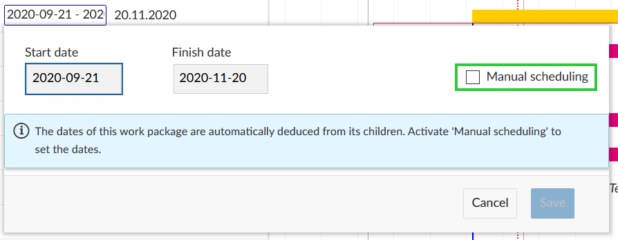
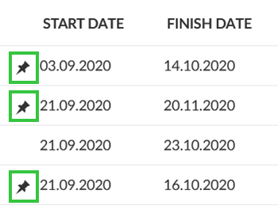

Automatic and manual scheduling mode
To schedule work packages in the Gantt chart there is an **automatic scheduling mode (default)** and a **manual scheduling mode** (new in [release 11.0](../../../release-notes/11-0-0)). To add dependencies between work packages you can set them as predecessor or follower in the Gantt chart. The automatic and manual scheduling modes influence the work packages' behaviour when changing dates of other related work packages.
Automatic scheduling mode
The automatic scheduling mode is generally set as the default mode for new work packages. For dependencies between two work packages this means:
- A work package’s start date is automatically determined by the start date of its earliest starting child.
- A work package’s finish date is automatically determined by the finish date of its latest ending child.
- When you move a work package past the set start date of its follower, the followers start date will be adjusted to its predecessor’s finish date. This is not the case the other way round.
Example: Work package 1 ends on October 5th. Its follower work package 2 starts on October 13th. Now work package 1 gets delayed by ten days, you have to adjust the planning. When you set the finish date of work package 1 to October 15th, the start date of work package 2 will automatically be set to October 16th.
- You can’t change the dates of a work package with children (if it’s in automatic scheduling mode).
Manual scheduling mode
The manual scheduling mode is mostly used when creating a top-down project plan (by defining the main phases first). You can then add child work packages without affecting the original (high-level) project schedule.
Changing to the manual scheduling mode makes sense if
- you want to set a parent work package’s date independently from the dates of its children, or
- you don’t want a parent work package’s dates being updated automatically when changing the children’s dates, or
- you don’t want a follower’s start date be automatically updated when you change the predecessor’s finish date
Changing mode
You can activate the manual scheduling mode by clicking on the date of a work package and selecting the box next to “Manual scheduling”.

The pin symbol next to the date indicates that a work package is in manual scheduling mode.

Changing back to automatic scheduling mode works the same way. Please note: When switching from manual scheduling to automatic scheduling some work packages’ dates might be updated according to principles stated above.